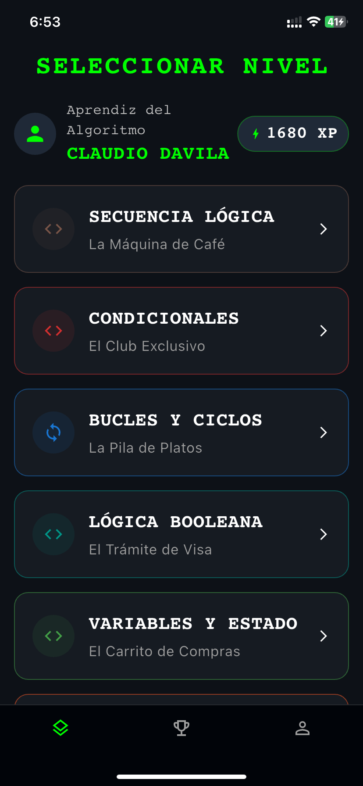
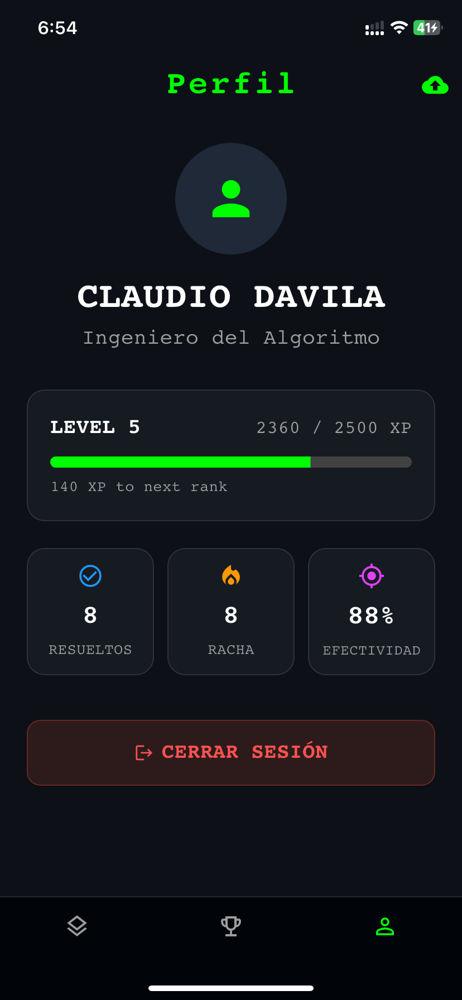
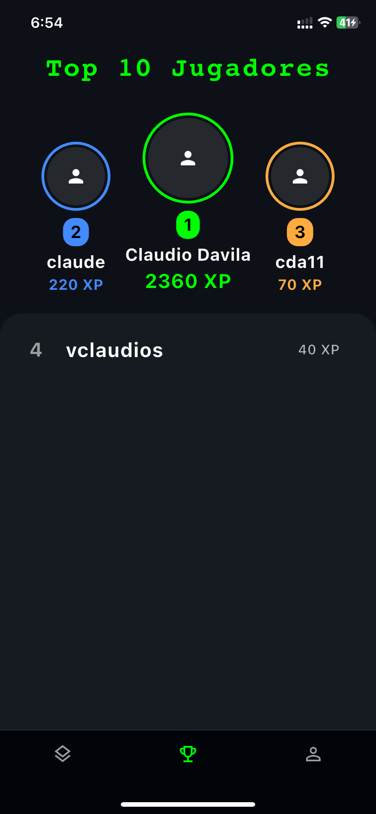

República Bolivariana de Venezuela
Instituto Universitario de Tecnología "Antonio José de Sucre"
Extensión Mérida
APLICACIÓN MÓVIL ORIENTADA AL APRENDIZAJE DE LA LÓGICA DE PROGRAMACIÓN MEDIANTE GAMIFICACIÓN
Caso de Estudio: Estudiantes de Informática del IUTAJS - Extensión Mérida
AUTOR
Br. Claudio Dávila
TUTOR
Ing. Luis Ordoñez
CAPÍTULO II

Operacionalización de Variables
Haz clic en la imagen para ampliarla
LA PROPUESTA
Aplicación Móvil para el Aprendizaje de la Lógica de Programación
Una solución interactiva basada en Flutter y Firebase, diseñada para transformar la frustración en motivación mediante Gamificación y Mobile Learning.
DISEÑO DE BASE DE DATOS (NoSQL)

Colección: Users
Gestiona la información del usuario y su avance en la aplicación.
-
Datos Personales
document_id(UID Auth), nombre, username, email. -
Stats (Estadísticas)Mapa con: precisión, nivel actual, racha, historial, vidas y XP.
-
Level ProgressEstado de niveles completados (estrellas, puntaje, fecha).
DISEÑO DE BASE DE DATOS (NoSQL)

Colección: Levels
Almacena toda la información relacionada a los desafíos y currícula.
-
Metadatos del Nivel
id, título, subtítulo, secuencia, icono, color y descripción. -
AnalogíaAprendizaje por asociación con la vida real.
-
Challenges (Array)Lista de ejercicios: pregunta, código, opciones, repuesta y feedback.
DESARROLLO DE LA PROPUESTA

Interfaces de Usuario (UI)
Login / Auth

Mapa de Niveles

Perfil y Stats

Ranking Global